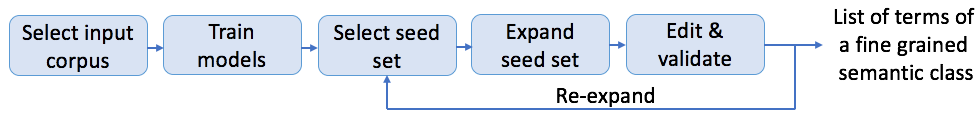
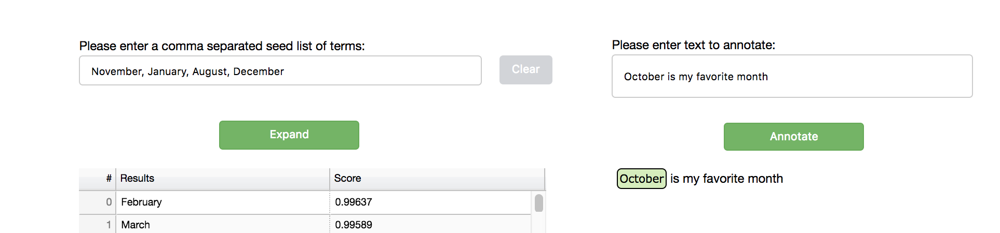

Set Expansion Solution¶
Overview¶
Term set expansion is the task of expanding a given partial set of terms into a more complete set of terms that belong to the same semantic class. This solution demonstrates the capability of a corpus-based set expansion system in a simple web application.

Algorithm Overview¶
Our approach is described by (Mamou et al, 2018) [1]. It is based on representing any term of a training corpus using word embeddings in order to estimate the similarity between the seed terms and any candidate term. Noun phrases provide good approximation for candidate terms and are extracted in our system using a noun phrase chunker. At expansion time, given a seed of terms, the most similar terms are returned.
Flow¶
Training¶
The first step in training is to prepare the data for generating a word embedding model. We provide a subset of English Wikipedia at datasets/wikipedia as a sample corpus under the Creative Commons Attribution-Share-Alike 3.0 License (Copyright 2018 Wikimedia Foundation). The output of this step is the marked corpus where noun phrases are marked with the marking character (default: “_”) as described in the NLP Architect Noun Phrase to Vec module documentation. The pre-process script supports using NLP Architect noun phrase extractor which uses an LSTM chunker model or using spaCy’s own noun phrases matcher. This is done by running:
python -m nlp_architect.solutions.set_expansion.prepare_data --corpus TRAINING_CORPUS --marked_corpus MARKED_TRAINING_CORPUS
optional arguments:
--corpus CORPUS path to the input corpus. Compressed files (gz) are
also supported. By default, it is a subset of English
Wikipedia.
--marked_corpus MARKED_CORPUS
path to the marked corpus.
--mark_char MARK_CHAR
special character that marks NPs in the corpus (word
separator and NP suffix). Default value is _.
--grouping perform noun-phrase grouping
--chunker {spacy,nlp_arch}
chunker to use for detecting noun phrases. 'spacy' for
using spacy built-in chunker or 'nlp_arch' for NLP
Architect NP Extractor
The next step is to train the model using NLP Architect Noun Phrase to Vec module. For set expansion, we recommend the following values 100, 10, 10, 0 for respectively, size, min_count, window and hs hyperparameters. Please refer to the np2vec module documentation for more details about these parameters.
python examples/np2vec/train.py --size 100 --min_count 10 --window 10 \
--hs 0 --corpus MARKED_TRAINING_CORPUS --np2vec_model_file MODEL_PATH \
--corpus_format txt
A pretrained model
on English Wikipedia dump (enwiki-20171201-pages-articles-multistream.xml.bz2) is available under
Apache 2.0 license. It has been trained with hyperparameters values
recommended above. Full English Wikipedia raw corpus and
marked corpus
are also available under the
Creative Commons Attribution-Share-Alike 3.0 License.
A pretrained model with grouping on the same English Wikipedia dump is also available under Apache 2.0 license. It has been trained with hyperparameters values recommended above. Marked corpus is also available under the Creative Commons Attribution-Share-Alike 3.0 License.
Inference¶
The inference step consists of expanding given seed terms into a set of terms that belong to the same semantic class. It can be done in two ways:
Running a python script:
python -m nlp_architect.solutions.set_expansion.set_expand --np2vec_model_file MODEL_PATH --topn TOPN
Web application
Loading the expand server with the trained model:
python -m nlp_architect.solutions.set_expansion.expand_server [--host HOST] [--port PORT] [--similarity SIMILARITY] model_path positional arguments: model_path a path to the w2v model file optional arguments: -h, --help show this help message and exit --host HOST set port for the server --port PORT set port for the server --grouping grouping mode --similarity SIMILARITY similarity threshold --chunker {spacy,nlp_arch} spacy chunker or 'nlp_arch' for NLP Architect NP Extractor
The expand server gets requests containing seed terms, and expands them based on the given word embedding model. You can use the model you trained yourself in the previous step, or to provide a pre-trained model you own. The similarity argument is the threshold to use for the annotation feature, see its description in the UI section below.
Note
default server will listen on http://localhost:1234 . If you set the host/port you should also set it in the
nlp_architect/solutions/set_expansion/ui/settings.pyfile.Run the UI application:
python -m nlp_architect.solutions.start_ui --solution set_expansion
You can also load the UI application as a server on different address/port using the following command:
python -m nlp_architect.solutions.start_ui --solution set_expansion --address=12.13.14.15 --port=1010
The UI is a simple web based application for communicating with the server and performing expansion and annotation.
Expansion
The UI communicates with the server by sending it seed terms to expand, and presenting the results in a simple table. An export option is available for downloading the results as a csv file. Selecting seed terms to expand is done by either directly type in the terms to expand or by selecting terms from the model vocabulary list. After expand results are available, the user can select terms from the results list (hold the Ctrl key for multiple selection) and perform re-expansion.
Text Annotation
The annotation feature allows you to annotate free text with similar terms comparing to the seed list (the default similarity threshold is 0.5, and can be set by the expand server —similarity argument). After selecting the Text Annotation checkbox, a text input is available for the user to type in text to annotate:
Grouping
In order to set the UI to work in grouping mode the user should set grouping=True in the ui/settings.py file. This mode is available just in case the model was trained with the grouping flag and in addition the server (expand_server.py) was loaded with the grouping flag. Click on a phrase in the vocabulary list in order to observe its group.
References¶
| [1] | Term Set Expansion based on Multi-Context Term Embeddings: an End-to-end Workflow, Jonathan Mamou, Oren Pereg, Moshe Wasserblat, Ido Dagan, Yoav Goldberg, Alon Eirew, Yael Green, Shira Guskin, Peter Izsak, Daniel Korat, COLING 2018 System Demonstration paper. |
| [2] | Term Set Expansion based NLP Architect by Intel AI Lab, Jonathan Mamou, Oren Pereg, Moshe Wasserblat, Alon Eirew, Yael Green, Shira Guskin, Peter Izsak, Daniel Korat, EMNLP 2018 System Demonstration paper. |